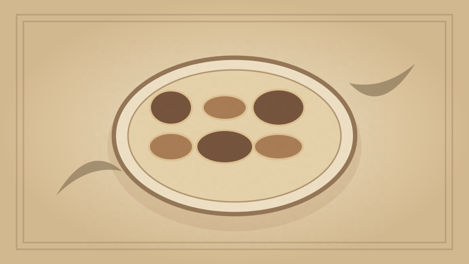

1910 · Fannie Merritt Farmer · FISH
Lobster and Oyster Ragout
The Boston Cooking-School Cook Book
❧ ───── ❦ ───── ❧

Historical Recipe
The following text is extracted from the 1910 edition, retaining historical terminology and quantities.
Original Ingredients & Directions
¼ cup butter
¼ cup flour
¾ cup oyster liquor
¾ cup cream
¾ teaspoon salt
¼ teaspoon pepper
Few grains cayenne
Few drops onion juice
1 pint oysters parboiled
¾ cup lobster dice
1½ tablespoons Sauterne
1 tablespoon finely chopped parsley
Make a sauce of first eight ingredients. Add oysters, lobster dice, wine, and parsley.
189 Stuffed Lobster à la Béchamel
Automatically extracted transcription; editorial verification pending. Historical instructions may not meet modern food-safety standards.